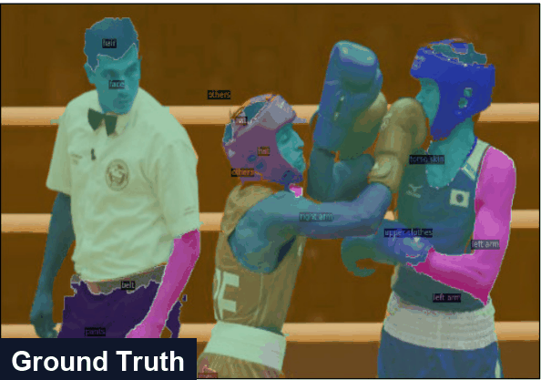
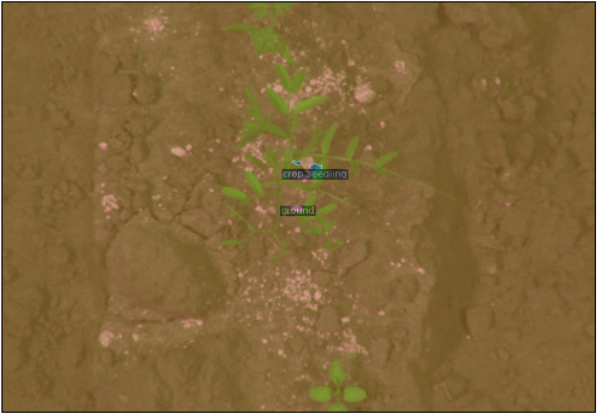
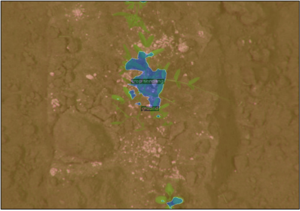
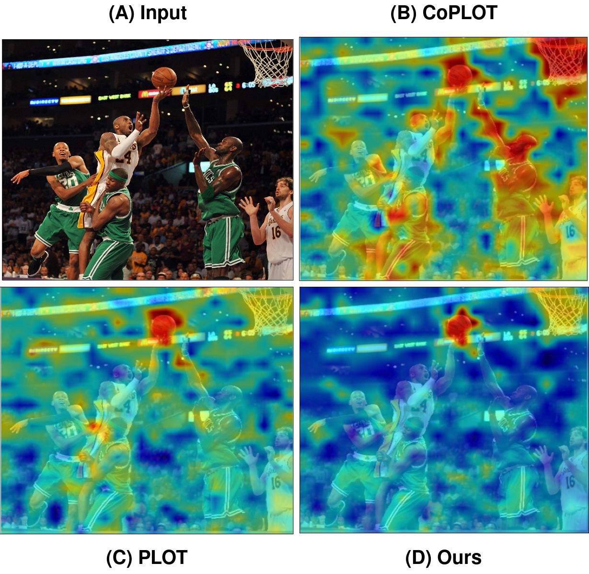

Abstract
Open-vocabulary semantic segmentation (OVSS) entails assigning semantic labels to each pixel in an image using textual descriptions, typically leveraging world models such as CLIP. To enhance out-of-domain generalization, we propose Cost Aggregation with Optimal Transport (OV-COAST) for open-vocabulary semantic segmentation. To align visual-language features within the framework of optimal transport theory, we employ cost volume to construct a cost matrix, which quantifies the distance between two distributions. Our approach adopts a two-stage optimization strategy: in the first stage, the optimal transport problem is solved using cost volume via Sinkhorn distance to obtain an alignment solution; in the second stage, this solution is used to guide the training of the CAT-Seg model. We evaluate state-of-the-art OVSS models on the MESS benchmark, where our approach notably improves the performance of the cost-aggregation model CAT-Seg with ViT-B backbone, achieving superior results, surpassing CAT-Seg by 1.72% and SAN-B by 4.9% mIoU.
Method
Stage 1 — Optimal Transport Alignment. With visual and textual CLIP embeddings fixed, a cost matrix is built from the cost volume, and the optimal transport plan is solved via Sinkhorn distance, iterating until the change in the dual variable falls below a convergence threshold.
Stage 2 — Guided CAT-Seg Training. The transport plan is frozen, and CAT-Seg's spatial and class aggregation modules are trained for the segmentation task using cross-entropy loss — no additional prompt-learning tokens are introduced, unlike PLOT.
Results
Multi-domain evaluation on MESS (mIoU, ViT-B)
OV-COAST improves +1.72 mIoU over the CAT-Seg baseline and outperforms SAN-B by 4.94 mIoU, evaluated across 19 datasets spanning significant domain shifts.
Click any column header to sort the table by that dataset.
| Method | Dark Zurich | MHP v1 | FoodSeg103 | ATLANTIS | iSAID | ISPRS | WorldFloods | FloodNet | UAVid | Kvasir-inst. | CHASE DB1 | CryoNuSeg | Corrosion CS | DeepCrack | PST900 | ZeroWaste-f | SUIM | CUB-200 | CWFID | Mean |
|---|---|---|---|---|---|---|---|---|---|---|---|---|---|---|---|---|---|---|---|---|
| Random (L.B) | 1.31 | 1.27 | 0.23 | 0.56 | 0.56 | 8.02 | 18.43 | 3.39 | 5.18 | 27.99 | 27.25 | 31.25 | 9.3 | 26.52 | 4.52 | 6.49 | 5.3 | 0.06 | 13.08 | 10.27 |
| Best Sup. (U.B) | 63.9 | 50.0 | 45.1 | 42.22 | 65.3 | 87.56 | 92.71 | 82.22 | 67.8 | 93.7 | 97.05 | 73.45 | 49.92 | 85.9 | 82.3 | 52.5 | 74.0 | 84.6 | 87.23 | 70.99 |
| ZSSeg-B | 16.86 | 7.08 | 8.17 | 22.19 | 3.8 | 11.57 | 23.25 | 20.98 | 30.27 | 46.93 | 37.0 | 38.7 | 3.06 | 25.39 | 18.76 | 8.78 | 30.16 | 4.35 | 32.46 | 22.73 |
| ZegFormer-B | 4.52 | 4.33 | 10.01 | 18.98 | 2.68 | 14.04 | 25.93 | 22.74 | 20.84 | 27.39 | 12.47 | 11.94 | 4.78 | 29.77 | 19.63 | 17.52 | 28.28 | 16.8 | 32.24 | 17.57 |
| X-Decoder-T | 24.16 | 3.54 | 2.61 | 27.51 | 2.43 | 31.47 | 26.23 | 8.83 | 25.65 | 55.77 | 10.16 | 11.94 | 1.72 | 24.65 | 19.44 | 15.44 | 24.75 | 0.51 | 29.25 | 19.8 |
| SAN-B | 24.35 | 8.87 | 19.27 | 36.51 | 4.77 | 37.56 | 31.75 | 37.44 | 41.65 | 69.88 | 17.85 | 11.95 | 19.73 | 50.27 | 19.67 | 21.27 | 22.64 | 16.91 | 5.67 | 26.21 |
| OpenSeeD-T | 28.13 | 2.06 | 9.0 | 18.55 | 1.45 | 31.07 | 30.11 | 23.14 | 39.78 | 59.69 | 46.88 | 33.76 | 13.38 | 47.84 | 2.5 | 2.28 | 19.45 | 0.13 | 11.478 | 21.82 |
| Gr.-SAM-B | 20.91 | 29.38 | 10.48 | 17.33 | 12.22 | 26.68 | 33.41 | 19.19 | 38.35 | 46.82 | 23.56 | 38.06 | 20.88 | 59.02 | 21.39 | 16.74 | 14.13 | 0.43 | 38.41 | 25.65 |
| ODISE | 28.88 | 7.31 | 16.62 | 36.73 | 11.71 | 54.83 | 26.30 | 35.06 | 43.46 | 28.02 | 20.60 | 12.27 | 10.74 | 24.34 | 20.18 | 5.74 | 26.24 | 4.62 | 30.43 | 23.37 |
| CAT-Seg | 28.86 | 23.74 | 26.69 | 40.31 | 19.34 | 45.36 | 35.72 | 37.57 | 41.55 | 48.2 | 16.99 | 15.7 | 12.29 | 31.67 | 19.88 | 17.52 | 44.71 | 10.23 | 42.77 | 29.42 |
| OV-COAST (ours) | 28.94 | 25.15 | 25.92 | 39.59 | 19.87 | 46.02 | 37.22 | 37.59 | 43.16 | 46.56 | 30.30 | 15.76 | 14.47 | 44.22 | 19.66 | 18.0 | 44.61 | 10.52 | 44.34 | 31.15 |
Prompt learning + optimal transport ablation
Unlike PLOT, naively combining prompt-learning techniques with optimal transport on CAT-Seg degrades performance — OV-COAST's two-stage strategy avoids this.
| Method | mIoU (on MESS) |
|---|---|
| CAT-Seg + VPT + Optimal Transport | 20.68 |
| CAT-Seg + CoPLOT | 23.98 |
| CAT-Seg + PLOT | 26.61 |
| OV-COAST (ours) | 31.15 |
Qualitative Results

MHP sample, cycling Ground Truth → CAT-Seg → OV-COAST.
Drag the handle below to directly compare CAT-Seg against OV-COAST on a CWFID (crop/weed) sample from the MESS benchmark.


CWFID sample — drag to compare
Grad-CAM: CLIP vision–text correlation

Logit heatmaps for the prompt "A photo of a ball in the scene." OV-COAST's optimal transport alignment concentrates activation more tightly on the actual ball than CoPLOT or PLOT.
Poster
Presented at the Workshop on Transformers for Vision, CVPR 2025, Nashville. Download PDF
BibTeX
@inproceedings{gandhamal2025ovcoast,
title={OV-COAST: Cost Aggregation with Optimal Transport for Open-Vocabulary Semantic Segmentation},
author={Gandhamal, Aditya and Sikdar, Aniruddh and Sundaram, Suresh},
booktitle={Workshop on Transformers for Vision at CVPR 2025 (Non-archival Track)},
year={2025},
note={Accepted (Non-archival)},
url={https://arxiv.org/abs/2506.03706}
}